Optagelsesprøve til de gymnasiale uddannelser
Mandag den 1. juli 2024
Kl. 10.00-14.00
Du har i alt 4 timer til prøven. Du bestemmer selv, i hvilken rækkefølge du besvarer opgaverne, og hvor lang tid du bruger på opgaverne i hvert fag.
Det er ikke tilladt at bruge internettet som fagligt hjælpemiddel eller foretage søgninger på
internettet, fx ved hjælp af Google.
Det er ikke tilladt at kommunikere med omverdenen.
Det er tilladt at benytte alle øvrige hjælpemidler, fx lærebøger, formelsamlinger, lommeregner, ordbøger, grammatiske oversigter og noter. Disse hjælpemidler kan enten medbringes på computeren eller på papir. Skolen kan tillade, at ordbøger tilgås via internettet.
Din besvarelse skal afleveres i et samlet dokument. Når du er klar til at aflevere din besvarelse, skal du gøre følgende:
- Tryk på knappen ’Dan og gem pdf’ i menuen i venstre side.
- Navngiv din besvarelse ’Optagelsesprøve’ og gem dokumentet på din computer.
- Tjek din besvarelse igennem og kontroller, at den indeholder de svar på opgaverne, som du ønsker at aflevere. Ser det ud til, at der er fejl i besvarelsen (fx svar på enkelte opgaver, der ikke er med i besvarelsen), skal du kontakte en eksamensvagt.
- Aflever din besvarelse i Netprøver.
Optagelsesprøven er i udgangspunktet anonym for dem, som skal bedømme din besvarelse. Det er derfor vigtigt, at du ikke skriver dit navn noget sted i besvarelsen eller i titlen på dit dokument, som du afleverer i Netprøver.
Dansk
Prøven i dansk består af tre delprøver:
- Den første delprøve er en læsefærdighedsprøve, der består af to tekster. Til hver af de to tekster er udarbejdet 10 opgaver. Alle opgaver skal besvares.
- Den anden delprøve er en grammatisk færdighedsprøve, hvor udsagnsled (verballed) skal omskrives i tid.
- Den tredje delprøve er en skriftlig færdighedsprøve.
Du kan højst få 25 point i danskprøven:
| Opgave | Antal mulige point |
|---|---|
| Læsefærdighed | 12 point |
| Grammatisk færdighed | 6 point |
| Skriftlig færdighed | 7 point |
Dansk
Læsefærdighed - Tekst 1
Til teksten er udarbejdet 10 opgaver. Der er kun ét rigtigt svar til hver opgave.
For at opnå 12 point i den samlede læsefærdighedsprøve (tekst 1 og 2) skal mindst 18 af de i
alt 20 opgaver i prøven være korrekt besvaret.
Sammenstød
Af Kim Fupz Aakeson
Han vækker mig tidligt, min far, selvom det er lørdag.
“Vi har et hårdt program i dag,” siger han og trækker mine gardiner fra. “Op med dig, op og slå på tromme!”
Lyset skærer, jeg hader at blive vækket af ham, han taler højt og kækt på en røvirriterende måde.
“Hallo?” siger han og klapper i hænderne. “Er der nogen?”
“Det er weekend?”
“Og derfor har jeg lavet kaffe og der er osse rundstykker og du skal op nu, tjeptjep!” Han rykker i min dyne, men jeg holder fast.
“Hvad er det jeg skal?”
“Vi to skal rydde kælderen for gammelt ragelse og bagefter kører vi på genbrugsstationen og kommer af med det hele på en pæn måde, jeg har lejet en trailer nede på tanken.”
Jeg svarer ikke, men ligner helt sikkert ikke en der har super meget lyst til at rydde kældre og køre på genbrugsstation.
“Åh, det er måske et stort problem for den unge herre?”
“Jeg har en aftale med Storm”
“Den aftale kommer nok til at vente, tror du ikke?”
Jeg ved jeg skal klappe i, men jeg kommer til at sige: “Måske er det kælderen der skal vente?”
Så bøjer han sig over mig, han er helt tæt på mig, altså rigtig tæt, jeg har hans ansigt helt nede i mit. Jeg kan lugte ham, han taler meget lavt nu.
“Jeg er din far. Du er min søn. Du bor i mit hus. Du æder min mad. Du sover under mit tag.” Han prikker mig i tindingen med en hård pegefinger. “Så når jeg beder dig om at give en hånd med nede i vores kælder, så stiller du op, kammerat.”
“Vi kan vel gøre det i morgen,” mumler jeg.
“Er du sådan lidt fattesvag?” Nu river han dynen af mig. “Du tager en kop kaffe og et rundstykke, vi rydder kælderen sammen, vi kører på genbrugsstationen og læsser af og bagefter kan du så nusse og hygge med Gorm alt det du vil.”
“Han hedder Storm.”
“Gæt engang om jeg er pisse ligeglad hvad han hedder?”
Jeg nikker, det er han nok.
“Er du med på programmet, søde ven?”
Jeg nikker igen og sætter mig op.
Han tager fat i min kind og niver den og siger: “Stor dreng.”
Jeg drikker den kaffe, min mor smører et rundstykke, sætter det på en tallerken foran mig.
“Spis lidt,” siger hun.
“Jeg er ikke sulten og jeg har en aftale med Storm.”
Hun tysser, vi kan høre ham i entreen og nu kommer han frem i døren.
“Er den unge adelsmand ved at være der?”
“Han skal lige spise lidt,” siger min mor.
“Jeg er ikke sulten.”
“Så meget desto bedre,” siger min far. “Så rykker vi.”
“Spis lidt først,” siger min mor.
Nu sænker min far stemmen igen, ser på min mor med det der blik han har. “Han er ikke sulten, siger han jo, er der nogen af ordene du ikke forstår?
Hun ryster på hovedet, nej.
“Eller vil du købe en vokal?”
Hun tier, jeg rejser mig, tømmer koppen og følger efter ham ud.
Så går vi i gang i den kælder, mig og min far. Den er fuld af lort og ragelse og jeg skal starte med at bære en masse tunge havefliser op i den trailer han har lejet.
“Du lægger dem i et lag i bunden.”
“Okay.”
Bagefter sætter han mig til at bære alt muligt andet op, han skal åbenbart ikke selv nogen steder, han går og sorterer og sætter det der skal med, frem foran trappen.
“De der gardinstænger skal osse væk.”
“Okay.”
“Og alle bøgerne i kasserne, bagefter tager du de to klapstole, dem gider jeg ikke glo på mere.”
Jeg render op og ned, han bliver ved med at finde ting han ikke gider glo på mere. “Væk med alt det gamle lort.”
Jeg skærer mig på et stykke nedløbsrør og stopper op, det bløder.
“Hvad laver du?”
“Jeg skar mig.”
Han kommer hen og ser på fingeren. “Uhada, pus, skal jeg puste på det?”
Jeg svarer ikke, vi fortsætter indtil traileren er godt proppet.
Min mor kommer ud med to urtepotter, der er skår i.
“Vi kører,” siger han til hende.
“Smider du mine olielamper ud?” spørger hun og ser på ladet.
“Det ser sgu sådan ud, gør det ikke?”
Hun svarer ikke, hun får en lille trækning ved munden, lidt som om noget gør ondt, så stiller hun urtepotterne ned i en hullet zinkbalje og går ind igen.
Han trækker en presenning hen over læsset og binder hjørnerne fast med stropper.
Vi kører uden at tale sammen, jeg tænder for bilradioen og leder lidt på de forskellige kanaler, jeg finder noget okay musik, men han slukker igen med det samme.
“Gider ikke høre på det lort.”
Ingen af os siger noget før vi triller ind på genbrugspladsen.
Der er godt med folk, det er forår, lørdag, nogen har sække med haveaffald, nogen bakser møbler op i containere, nogen roder i bagagerum og ser sig forvirrede omkring, der er kø ved en af de ansatte, hun er tyk og har knaldrødt hår og går med neonvest og peger og forklarer hvor ting skal hen.
“Metal,” siger han til mig og tager urtepotterne op og rækker mig zinkbaljen og nikker mod den rigtige container.
“Gardinstængerne skal samme vej.”
Han tager klapstolene og vender ryggen til mig, jeg går ned med baljen, står et øjeblik og ser ind på alt det kasserede jern og blik derinde, skilte, tøjstativer, kontorstole, campingborde, jeg smider baljen så langt ind jeg kan og nyder larmen, så går jeg tilbage efter gardinstængerne. Han er osse kommet tilbage og ser på mig.
“Hvorfor fanden tog du ikke dem med? Det er samme container?”
“Det gjorde jeg bare ikke.”
“Spiller du smart nu?”
“Næh.”
Han ryster opgivende på hovedet, jeg samler gardinstængerne sammen og går tilbage til containeren med metal. Sådan bliver vi ved, går frem og tilbage med ting, tømmer traileren indtil der kun er havefliserne tilbage.
Han siger: “Jeg kører hen til nummer 14 og så kommer du over og giver en hånd med fliserne.”
Jeg ser efter bilen. Han kører rundt om containerne i midten af pladsen og er nødt til at parkere lidt for langt fremme på grund af en varevogn der holder ud for den åbne container til sten og fliser. Han stiger ud og er irriteret, tager de første par fliser og bærer dem hen, lemper dem op over kanten på containeren og lader dem falde. Men nu kører varevognen og han sætter sig ind i vores bil for at bakke tættere på.
Og så sker det.
Traileren svinger ud da han bakker og rammer en sort bil der er på vej mod udgangen, det giver et lille smæld, de stopper og alle glor. Jeg går ind mellem containerne og hen til traileren, min far stiger ud, en ung fyr stiger ud af den anden bil, de står begge to og ser på fyrens skærm.
“Hvad sker der lige for dig?” spørger fyren.
“Du må sætte farten ned, når du er på en genbrugsplads,” siger min far. “Der er andre end dig.”
“Kom igen“
“Hvis du kører lidt mere stille og roligt, kan du nå at se hvad der sker omkring dig.”
Fyren griner hånligt. “Prøver du at tørre den af på mig?”
“Hastighed efter forholdene, sådan er det jo bare.”
Nu går fyren tættere på min far, han er næsten et hoved mindre, men bredere. “Du bakker din fucking trailer ud i min bil og skyder skylden på mig?”
“Du skal lige falde ned,” siger min far og lægger en hånd på fyrens skulder for at få ham lidt væk, men fyren slår hans hånd væk, skubber tilbage, han tager hårdt fat i min fars krave og svinger ham rundt, presser ham op mod containeren og tvinger ham ned på knæ.
“Hovhov,” råber hende i neonvesten, men hun bliver stående, alle bliver stående.
“Du har lavet en bule i min fucking forskærm og den kommer du til at betale, er du med, Morfar?”
Min far siger ingenting, men han nikker, ser ikke op.
“Så nu tager jeg et billede af bulen og din nummerplade og du giver mig dit mobilnummer, ja? Er vi enige?”
Min far mumler ja. Fyren retter sig op, fotograferer bulen og vores nummerplade, min far sidder stadig op ad containeren og fyren går tilbage og sætter sig på hug.
“Og dit nummer?”
Min far siger tallene, fyren taster dem ind på sin mobil.
“Du hører fra mig,” siger han så og sætter sig ind i sin bil og kører væk.
Jeg venter, min far kommer på benene og børster snavs af sine bukser, det er som om alle dem der gloede vågner op og kommer i tanke om, hvad de var i gang med, går videre med at smide deres ting ud.
Vi tømmer traileren for havefliser uden at se på hinanden, vi sætter os ind i bilen, han starter og vi kører ud på vejen.
Jeg sidder lidt og skæver, han stirrer lige frem for sig, stopper for rødt, og så gør jeg det, jeg tænder for radioen, jeg leder på kanalerne og ender på noget pop, jeg skruer lidt op.
Han stirrer bare lige frem, begge hænder på rattet, han er sunket lidt sammen.
Det er egentlig ikke musik der siger mig noget, men nu hører vi det altså, nu hører vi det latterlige popnummer mens vi kører hjemad, min far og mig.
(2023)
1. Fra hvilken synsvinkel bliver novellen fortalt?
x
x
x
x
2. Hvad eller hvem er det, der vækker fortælleren?
x
x
x
x
3. Hvad får fortælleren serveret til morgenmad?
x
x
x
x
4. Når faren kalder sin søn en adelsmand, er han
x
x
x
x
5. Hvordan har moren det med faren?
x
x
x
x
6. Hvorfor tager sønnen ikke gardinstængerne med til metalcontaineren?
x
x
x
x
7. Hvordan reagerer de andre på genbrugspladsen på sammenstødet mellem de to mænd?
x
x
x
x
8. Hvordan påvirker sammenstødet faren?
x
x
x
x
9. Hvorfor slukker sønnen ikke for bilradioen, når han synes, det er et latterligt popnummer?
x
x
x
x
10. Temaet i novellen kan bedst beskrives med ordene
x
x
x
x
Læsefærdighed - Tekst 2
Til teksten er udarbejdet 10 opgaver. Der er kun ét rigtigt svar til hver opgave.
For at opnå 12 point i den samlede læsefærdighedsprøve (tekst 1 og 2) skal mindst 18 af de i
alt 20 opgaver i prøven være korrekt besvaret.
Efter 200 års fravær er ulven tilbage. Og frygten sidder stadig i os
(I uddrag)
Af Thilde Thordahl Andersen
Selvom ulve ikke er (farlige, forskellige, gode, sjove) for mennesker, går fjendskabet mellem menneske og bæst langt tilbage. Senest har det vakt stor opstandelse, at en ulv blev spottet på Vejle havn. Den viste sig senere at være en hund.
Rasmine Hjortshøj var overbevist om, at det var en (gås, hjort, hund, ulv), der spankulerede ud foran hende og hendes kærestes bil sidste fredag.
”Den gik bare ind foran bilen, så vi sænkede selvfølgelig farten," har hun fortalt til TV
Syd og tilføjet:
"Den var helt upåvirket af, at vi kom (cyklende, flyvende, gående,
kørende)."
Tidligere på måneden var der blevet spottet en ulv ved en trafikeret vej i Vejle, og nu så det altså ud til, at ulven var kommet endnu tættere på mennesker – for nu befandt den sig på byens havn. Senere viste det sig dog, at den ulv, som kæresteparret havde set, og hvis art egentlig var blevet bekræftet af en pensioneret naturvejleder, slet ikke var nogen ulv. Det var en hund, og den hed Max, kunne Vejle Amts Folkeblad berette. En blanding af racerne Sibirian Husky og Alaskan Malamute.
Men opstanden omkring den vejlensiske hund i ulveklæder viser, at menneskets forhold til ulven er præget af store følelser. Konflikten mellem menneske og ulv er mindst lige så gammel som landbruget, og en (gammel, ny, slidt, ung) frygt for rovdyret lever stadig i mennesker i dag.
Efter knap 200 års fravær i Danmark er ulven som bekendt tilbage her til lands. Den første blev fundet død i Thy i 2012. Og i år er den danske ulvebestand oppe på 29 individer, viser en opgørelse fra Miljøstyrelsen. Der forventes at være 100 danske ulve om fem år, for de er fredede. Det efterlader ikke alle mennesker upåvirket. Mens nogle hylder, at ulven er genindvandret i Danmark, og ser den som symbol på (opdyrket, utæmmet, ødelagt, økologisk) natur, frygter andre de skader, ulve kan forvolde.
"Der er ingen tvivl om, at der er en frygt hos nogle omkring ulve. Derfor er det vigtigt løbende at oplyse om ulvens reelle biologi, så frygten ikke fører til ubegrundet jagt," siger Bengt Holst.
Han er (biolog, geolog, læge, præst) og formand for Det Dyreetiske Råd samt tidligere videnskabelig direktør i København Zoo.
"Rent faktuelt er der ingen grund til at være bange for ulve. Ulve er bange for mennesker. Men det fjerner ikke nødvendigvis frygten, som går langt tilbage i tiden. Ulven har altid været fremstillet som det store, glubende, menneskeædende rovdyr, der særligt har færdedes ude om natten," siger Bengt Holst.
Det er nemlig rigtigt. Ulvene er (aldrig, ikke, overalt, pludselig) i kulturhistorien og i sproget. De er grådige, snedige, ondsindede og aggressive. De færdes i flok, og de vil aldrig mennesker det godt.
Der er for eksempel ulven, der æder både Rødhætte og bedstemor, men som ender med at blive sprættet op. Der er de tre små grise og ulven. Der er Peter Bellis sang "Ulven Peter", hvor ulven ikke kun er ond og glubsk, men også seksuelt aggressiv. Der er Fenrisulven kendt fra nordisk mytologi – søn af Loke og Angerbode, bror til Midgårdsormen og Hel og først en almindelig ulv, som siden vokser sig til en utrolig størrelse. Den bider hånden af guden Tyr, da aserne lænker den, og indtil Ragnarok står den bundet i en (bil, butik, hule, parkeringskælder) med et sværd stukket i gabet. Hylende og frådende af raseri.
Bengt Holst peger blandt andet på, at flere malerier fra europæiske slagmarker (gennem, mellem, over, under) historien har vist ulve, der åd af de faldne soldater. Det er billeder som dem, der giver indtrykket af, at ulve er grådige menneskeædere, siger han. Dertil kommer, at ulve er nysgerrige. De kan derfor godt komme tæt på menneskets bolig, men vil flygte, så snart de ser et menneske. Måske flygter de ikke langt væk, men de holder afstand, siger han. Anderledes forholder det sig med mindre husdyr som får, som ulve godt kan betragte som byttedyr og gå til angreb på. Her har man gode erfaringer med ulvesikre hegn, som holder ulve ude. Men mennesker er ikke i fare, understreger Bengt Holst.
"Reelle angreb, hvor ulve har opsøgt mennesker for at (angribe, fodre, forsvare, underholde) dem, kender man uendeligt få eksempler på, selvom man går rigtig mange år tilbage. Og til sammenligning er der alene i USA hvert år over en million hundeangreb mod mennesker, og hvor en snes stykker har en dødelig udgang," siger Bengt Holst.
Ikke desto mindre består både fascination og frygt. Og roden skal findes mange århundreder tilbage, (hvisker, mumler, råber, siger) Jakob Ørnbjerg. Han er historiker og arbejder i øjeblikket på en bog om ulvens danmarkshistorie.
Grammatisk færdighed
Du skal følge anvisningen og besvare opgaven. Du kan højst få 6 point for din besvarelse.
Originaltekst:
Traileren svinger ud da han bakker og rammer en sort bil der er på vej mod udgangen, det giver et lille smæld, de stopper og alle glor. Jeg går ind mellem containerne og hen til traileren, min far stiger ud, en ung fyr stiger ud af den anden bil, de står begge to og ser på fyrens skærm. “Hvad sker der lige for dig?”
Rediger i versionen, der er i boksen. Husk at understrege det ændrede udsagnsled som i
eksemplet. Du understreger ordet ved at markere det og dernæst trykke på 'U'.
Skriftlig færdighed
Du skal følge anvisningerne i boksen nedenfor og besvare opgaven. Din besvarelse bliver vurderet ud fra følgende kriterier:
-
sammenhæng
-
grammatik
-
retskrivning
-
tegnsætning
Du kan højst få 7 point for din besvarelse.
Skriv en fortsættelse af novellen Sammenstød. Fortsættelsen foregår om eftermiddagen, hvor fortælleren forklarer Storm om dagens hændelser. Du skal skrive ca. 200 ord.
Skriv din besvarelse i boksen herunder.
Engelsk
Prøven i engelsk består af fem delprøver: fire prøver i sprog og grammatik og en prøve i skriftlig fremstilling.
| Opgave | Antal mulige point |
|---|---|
| Section 1 | 4 point |
| Section 2 | 4 point |
| Section 3 | 4 point |
| Section 4 | 6 point |
| Section 5 | 7 point |
Section 1
Choose the right word.
There are more words than you will need. No word may be used more than once.
There is an example in the first sentence.
- photograph
- -
- photographs
- -
- photographed
- -
- photographing
- -
photographer- -
- photographers
- -
- photographic
Ansel Adams was an American and environmentalist, best known for his black and white pictures of the American West.
People who are things during severe weather conditions live a dangerous life.
My sister has a memory. She remembers every single detail of the places she visits. I wish I had the same skill.
My brother loves gardening, and every summer he all his lovely flowers and posts the pictures on Instagram.
The were very eager when the models were walking onto the catwalk. They knew that only the best pictures could be sold to fashion magazines.
Section 2
Read the text below.
Use the word in brackets and write the correct form of the word as shown in the two examples.
We would travel by train to central London and then walk to the first activity of the day. Normally, we could only fit in two visits before it was time to return to the station and head home, tired and with aching (foot)
Section 3
Dinosaurs were the main animals on Earth for more than 150 million years. They were lizard-like 3.0 (fish, reptiles, insects, rodents) that lived all over the planet. Their fossils have been found on every continent. Dinosaurs lived in all sorts of 3.1 (different, unlike, separate, unrelated) environments and came in a variety of shapes and sizes. The largest dinosaurs weighed more than 100 tons and did not have any hair or fur. Their skin had a bumpy or pebbly 3.2 (facade, tone, surface, outside).
Some scientists believe that dinosaurs were grey or green. These colours would have helped the dinosaurs blend in with their 3.3 (elements, surroundings, conditions, areas). The last dinosaurs became 3.4 (extinct, inactive, destroyed, cancelled) about 65.5 million years ago.
Section 4
Find and replace the six mistakes with the correct words.
There is an example in the first sentence.
Armstrong entered sports at a young age, excelling in both swimming and cycling. He competed in triathlons and swimming competitions while still a teenager. In 1992, he turned professional when he joined the Motorola cycling team, and one year later, he become the second youngest man to win in world road racing.
After the 1996 Tour de France he fell ill, and in october, Armstrong’s doctors diagnosed him with testicular cancer. The illness had by that time also spread to his lungs and brain. He underwent chemotherapy, which was considered her best chance for survival.
Luckily, Armstrong has made a full recovery and is now cancer free.
Section 5
- uniform
- -
- marching
- -
- castle
- -
- outside
- -
- colourful
Matematik
Optagelsesprøven i matematik består af 20 opgaver med i alt 25 delopgaver. I hver delopgave kan du opnå 1 point. Samlet set kan du altså højst opnå 25 point i matematik.
Du må bruge alle hjælpemidler, herunder bøger, noter, computer og lommeregner.
- Du kan skrive en brøkstreg ved at bruge dette tegn: / Eksempel: 1/3
- Du kan skrive et gangetegn ved at bruge dette tegn: * Eksempel: 2*6
- Du kan skrive en potens ved at bruge dette tegn: ^ Eksempel: 4^2
Matematik
Opgaver
Opgave 1
Skriv et tal, der 10 større end 182.
Opgave 2
Beregn tallet
Opgave 3
Hvilket tal er størst?
Sæt X
|
0,4 |
0,38 |
0,048 |
0,267 |
0,09 |
Opgave 4
Hvilken af brøkerne er mindre end \frac{1}{2}?
Sæt X
|
\frac{3}{5} |
\frac{2}{3} |
\frac{6}{10} |
\frac{4}{9} |
\frac{5}{2} |
Opgave 5
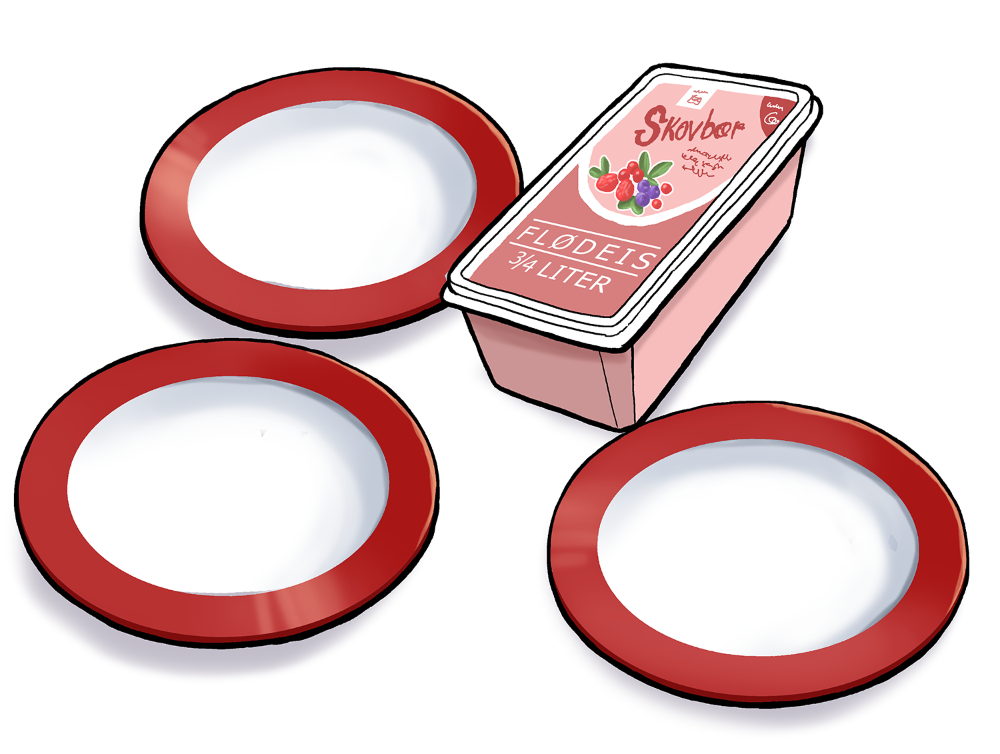
Tegning: Hans Ole Herbst3 børn skal dele ¾ L is. Hvor meget is får de hver, hvis de deler lige?
Opgave 6
Løs ligningen 9 = 2x + 1
Opgave 7
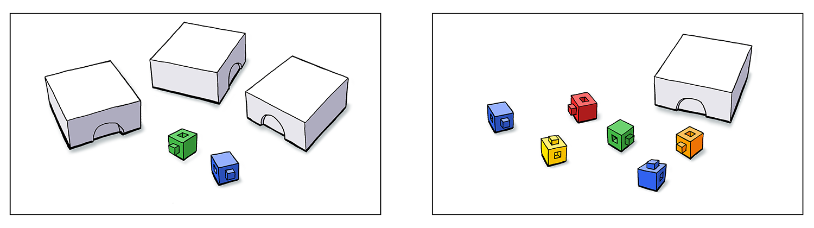
Tegning: Hans Ole HerbstPå de to tegninger er der nogle løse centicubes og nogle centicubes i æsker. Alle æskerne indeholder samme antal centicubes. Der er lige mange centicubes på tegning 1 og på tegning 2.
Hvor mange centicubes er der i hver æske?
Opgave 8
Opgave 9
Opgave 10
Opgave 11
Opgave 12
Hvilket udtryk er en korrekt omskrivning af a\cdot a\cdot 2?
Sæt X
|
2a^2 |
2a\cdot 2 |
2a |
2\cdot2 |
a^4 |
Opgave 13
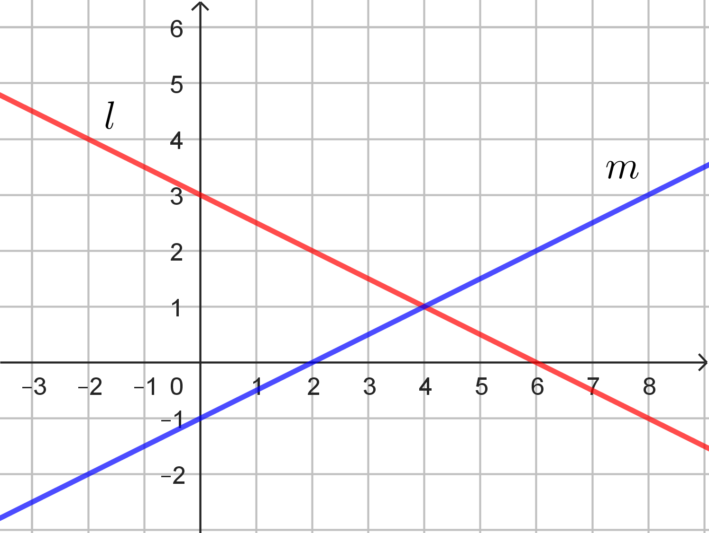
På figuren er der to rette linjer l og m.
Hvilken af følgende ligninger passer til linjen m?
Sæt X
|
y = 2 \cdot x - 1 |
y = - 1 \cdot x + 2 |
y = \frac{1}{2} \cdot x + 1 |
y = -1 \cdot x + \frac{1}{2} |
y = \frac{1}{2} \cdot x - 1 |
Opgave 14
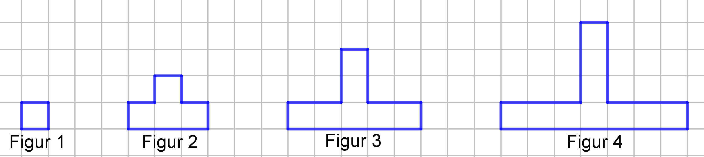
Her er de første fire figurer i en figurfølge. Figurfølgen fortsætter på samme måde,
som den er begyndt.
Figur 1 indeholder 1 tern. Figur 2 indeholder 4 tern. Figur 3 indeholder 7 tern. Figur 4
indeholder 10 tern.
Hvilket nummer har den figur, der indeholder 25 tern?
Opgave 15
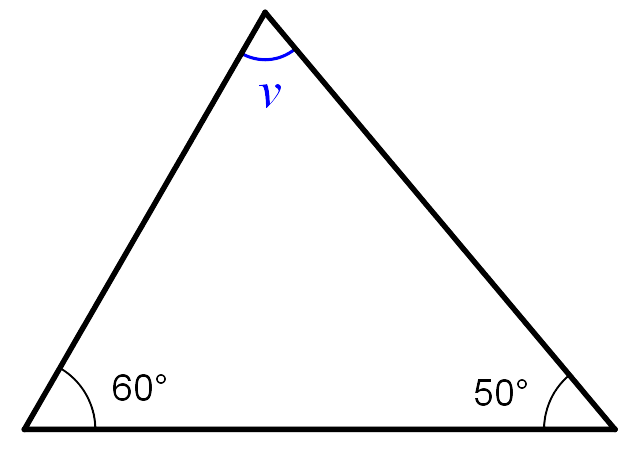
Hvor stor er vinkel v?
Opgave 16
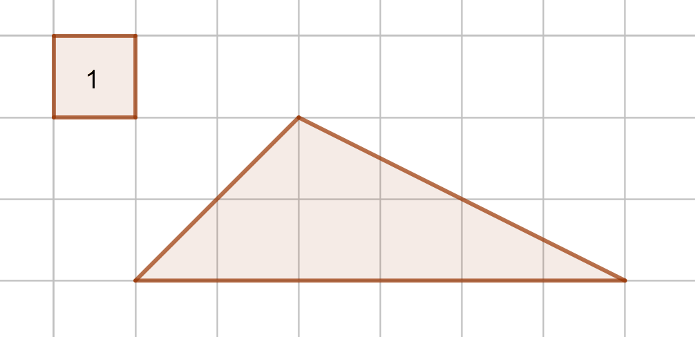
Opgave 17
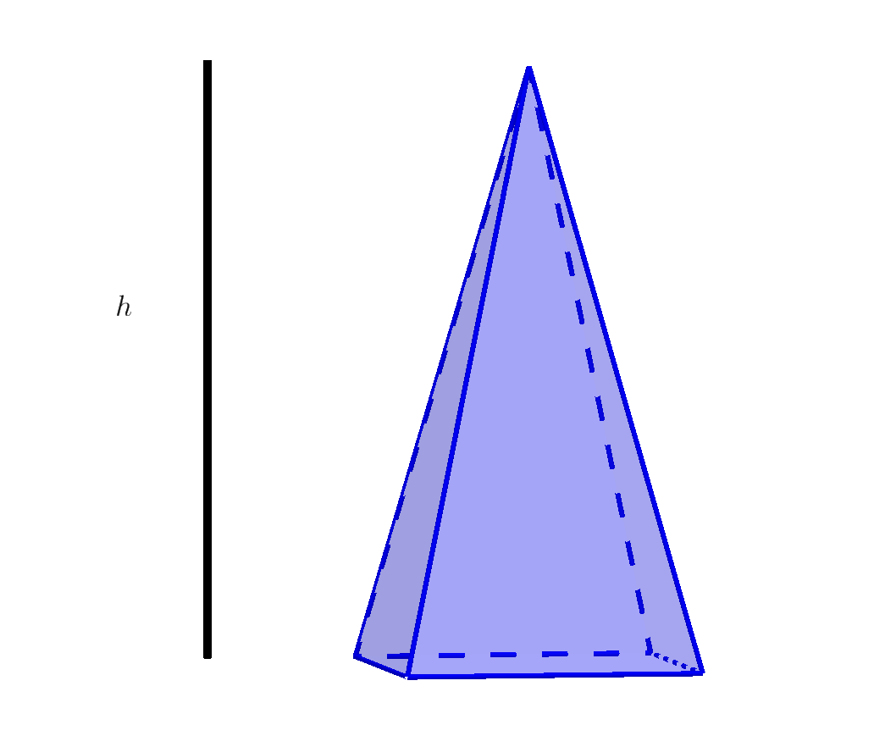
h er højden af pyramiden (cm).
Tegningen viser en pyramide med grundfladeareal 12 cm2. Man kan beregne rumfanget af pyramiden med formlen i rammen.
Hvad er højden af pyramiden, når rumfanget er 32 cm3?
Opgave 18
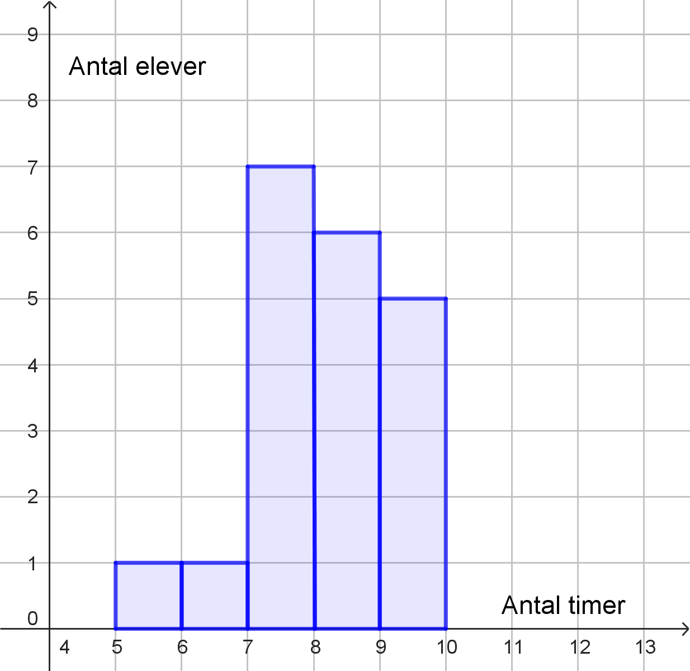
Hvor mange elever sov mellem 8 og 9 timer?
elever
Hvor stor en procentdel af eleverne sov mindre end 7 timer?
%
Opgave 19
Opgave 20

Mille kaster med en terning, som viser et tilfældigt tal mellem 1 og 12.
Hvor stor er sandsynligheden for, at Milles kast viser tallet 8?
Fysik/kemi
Prøven i fysik/kemi består af 23 opgaver, og du kan opnå 1 eller 2 point i hver enkelt opgave. De 23 opgaver er fordelt på 5 områder indenfor fysik/kemi. Du kan samlet få op til 25 point.
Grundstoffernes periodesystem findes sidst i sættet.
1. Atomer og grundstoffer
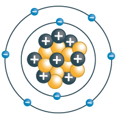
Figur 1.a: En atommodel.|
3 |
4 |
5 |
6 |
7 |
8 |
Anvend grundstoffernes periodesystem til de næste 2 opgaver.
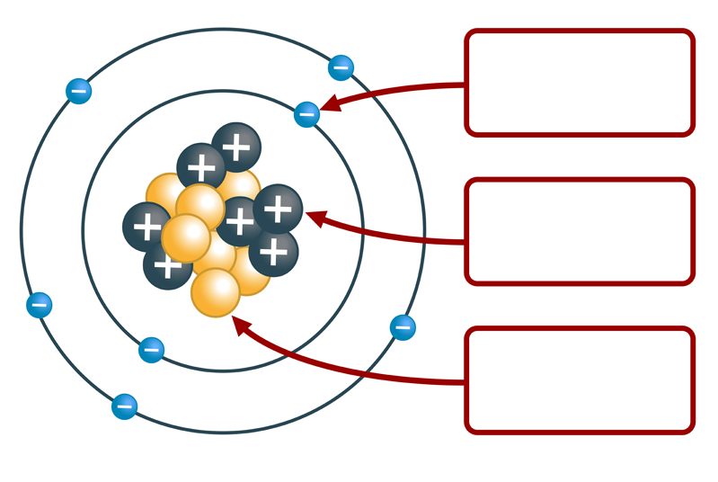
Neutron
Figur 1.b: En atommodel.2. Sollotion
Sollotion kan beskytte mod Solens stråling enten ved et fysisk filter eller et kemisk filter. Et fysisk filter er et af stofferne magnesiumoxid, zinkoxid eller titandioxid.
Vælg den korrekte kemiske formel for titandioxid. Brug grundstoffernes periodesystem.
| Stof | Formel |
| Titandioxid |
Sollotion beskytter mod UVA- og UVB-stråling fra Solen.
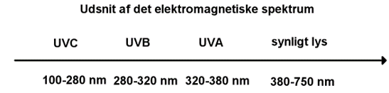
Figur 2.a: Elektromagnetisk strålingBølgelængden for UVA-stråling er
|
større end, |
mindre end, |
den samme som |
bølgelængden for synligt lys. Anvend figur 2.a.
UV-stråling kommer fra Solen. Noget absorberes i atmosfæren og rammer derfor ikke jordoverfladen. Se figur 2.b.
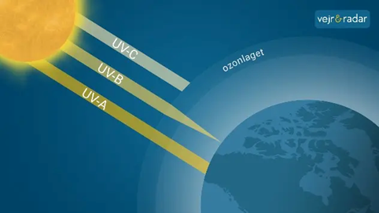
Figur 2.b: UV-stråling fra Solen (Kilde: Vejr&Radar.dk)| Udsagn | Sæt X |
| UVA-strålingen optages i titandioxid. | |
| UVA-strålingen går gennem titandioxid og ind i huden. | |
| UVA-strålingen sendes tilbage til luften, når det rammer titandioxid. |
En elev finder en gammel sollotion, som kun var holdbar til 2012. Eleven vil undersøge,
om den stadig virker.
Eleven smører forskellig mængde sollotion på et plastfolie. Eleven tænder en UV-lampe og
måler med en UV-sensor, hvor meget UVA-stråling der går gennem foliet.
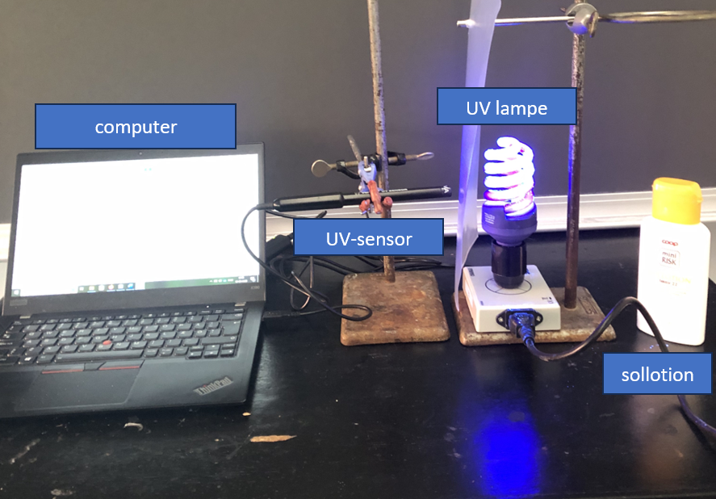
Figur 2.c: Forsøgsopstilling (Foto: Søren Hansen)| Sollotion | Ny | Gammel | Ingen |
| Mængde sollotion | 30 g/m2 | 30 g/m2 | 0 g/m2 |
| UVA-stråling målt efter plastfolie | 2,3 % | 2,2 % | 100 % |
 Figur 2.d: Udsnit af
varedeklaration for minirisk sollotion
Figur 2.d: Udsnit af
varedeklaration for minirisk sollotion
Anvend figur 2.d.
3. Hjortetakssalt
Hjortetakssalt kan bruges som hævemiddel, når man bager småkager. Hjortetakssalts kemiske navn er ammoniumhydrogencarbonat (NH4HCO3).
Hvilke af de nedenstående atomer indgår i ammoniumhydrogencarbonat (NH4HCO3)?
|
natrium |
nikkel |
nitrogen |
carbon |
calcium |
cadmium |
En elev undersøger, hvad der sker, når hjortetakssalt opvarmes.
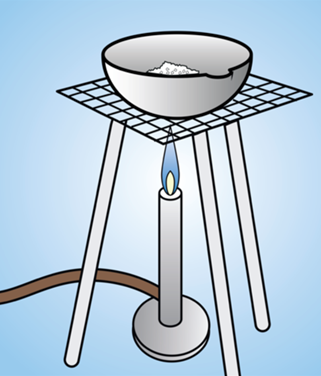
Figur 3.a: Materialer til elevens undersøgelse.| Materialer | Sæt X |
| Bunsenbrænder | |
| Konisk kolbe | |
| Porcelænsskål | |
| Reagensglas | |
| Termometer |
Efter opvarmningen er hjortetakssalt omdannet til nye kemiske forbindelser, som er
|
faste stoffer |
metaller |
gasser |
væsker |
| Tilstandsform før opvarmning | Tilstandsform efter opvarmning | Sæt X |
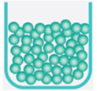 |
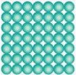 |
|
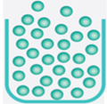 |
||
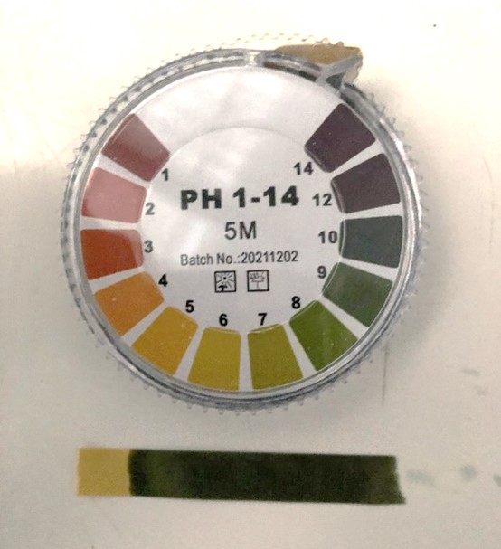
Figur 3.b: Måling af pH (Foto: Søren Hansen)Hvad viser pH-værdien om dampene fra opvarmningen af ammoniumhydrogencarbonat. Anvend figur 3.b.
Dampene indeholder
|
syre |
base |
ingen af delene |
Hvilken kemisk forbindelse kan være indeholdt i dampene fra ammoniumhydrogencarbonat (NH4HCO3)?
|
NH3 |
HCl |
SO2 |
4. H.C. Ørsted og elektromagneter
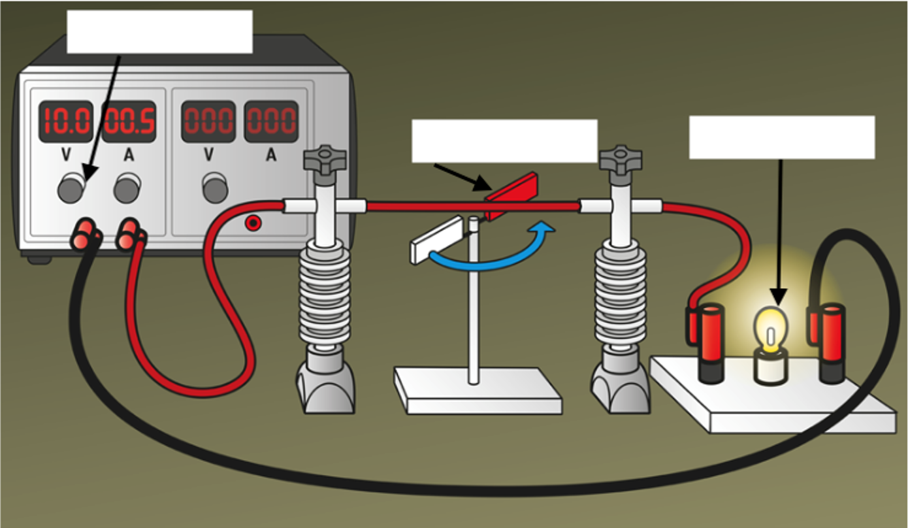
Figur 4.a: Forsøgsopstilling til at undersøge elektromagnetisme.Hvilke materialer indgår i forsøgsopstillingen?
Skriv de korrekte materialer i boksene. Vælg fra listen.
- Strømforsyning
- Stangmagnet
- Motor
- Magnetnål
- Pære
- Galvanometer
- Hesteskomagnet
| Mulige ord |
| magnetfelt, elektrisk felt, tyngdefelt, magneten, ledningen, pæren, elektricitet, kerneenergi, lys |
| Når der går strøm gennem en ledning, opstår der et rundt om ledningen. Feltet påvirker , så den giver et udslag. Forsøget viser, at der er en sammenhæng mellem og magnetisme. |
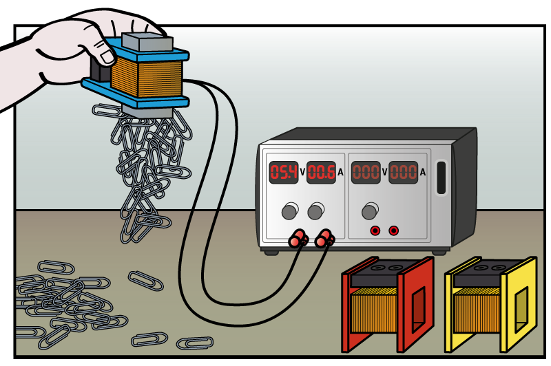
Figur 4.b: Undersøgelse af, hvor mange clips en elektromagnet kan tiltrække.| Strømstyrke | 200 vindinger | 400 vindinger | 1.600 vindinger |
| 0,2 A | 3 | 13 | 80 |
| 0,4 A | 9 | 27 | 137 |
| 0,6 A | 22 | 50 | 205 |
Hvor mange clips kan en spole med 400 vindinger og en strømstyrke på 0,4 A tiltrække i undersøgelsen? Brug data fra tabel 4.1.
5. Åbent landbrug
En skoleklasse var på besøg hos en landmand med kvæg. En ko producerer blandt andet mælk,
gylle og methan.
På gården blev methangas opsamlet og anvendt til opvarmning i stuehuset.
Methangas kan bruges til opvarmning, fordi
|
den er farveløs |
den lugter |
den kan brænde |
På andre gårde opsamles methangas ikke, men udledes direkte i atmosfæren.
Hvorfor er methan uønsket i atmosfæren?
methan køler atmosfæren ned
methan reagerer med vand i atmosfæren
methan er en drivhusgas
Køerne producerer også gylle. Klassen målte pH i gyllen til 7,6.
Hvilken betegnelse passer på gylle?
|
sur |
basisk |
neutral |
Når landmanden kører gylle ud på marken, kan det ske med følgende køretøj:
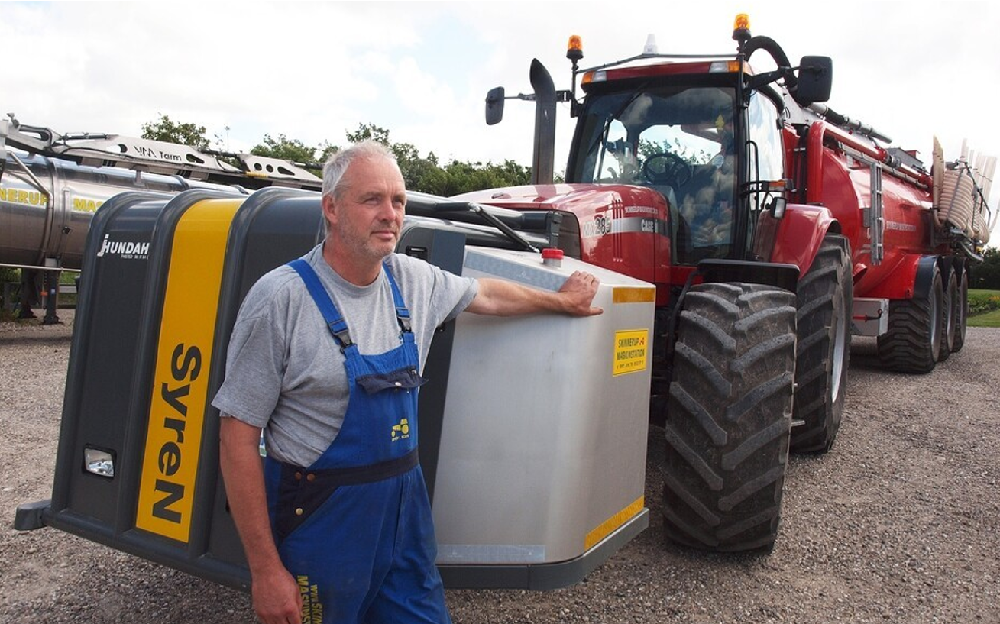
Figur 5.a: Køretøj til udbringning af gylle.(Kilde: Morten Damsgaard/FBG Medier)
Den store tank på traktoren indeholder koncentreret svovlsyre, som blandes med gyllen, lige inden den kommer i jorden.
Hvordan påvirker tilsætningen af svovlsyre gyllens pH-værdi?
|
pH-værdien falder |
pH-værdien er uændret |
pH-værdien stiger |
Oplysninger til brug for Copydan
Anvendt materiale i Dansk:
Thilde Thordahl Andersen: ”Efter 200 års fravær er ulven tilbage. Og frygten sidder stadig i
os”.
Kristeligt Dagblad.
Maj, 2023.
Anvendt materiale i engelsk:
Image credit:
https://www.thescottishsun.co.uk/wp-content/uploads/sites/2/2017/07/nintchdbpict000252983581.jpg
Dette prøvesæt er omfattet af ophavsretten, jf. ophavsretslovens § 1.
Prøvesættet må alene anvendes til den på prøvesættet anførte prøve.
Al anden anvendelse af prøvesættet, herunder visning eller deling f.eks. via internettet,
sociale medier, portaler og bøger, udgør en krænkelse af Børne- og Undervisningsministeriets
og evt. tredjemands ophavsret og er ikke tilladt.
Overtrædelse af ophavsretten kan være erstatningspådragende og/eller strafbart.
Prøvesættet kan dog, efter at prøven er afsluttet, anvendes til undervisningsbrug på
uddannelser m.v. omfattet af den lovgivning, som Styrelsen for Undervisning og Kvalitet
administrerer.